I don't know how the idea of this came to be, maybe it was at the bank,
maybe at church, but it's the one on this list that has more chances
(if any) of actually being done than the others. I was thinking about
how love and hate are very strong forces in our lives and poof!
"A game where you use love and hate as your powers".
The game is a 2D platform action game, something like megaman, but with a sword, like megaman zero.
No recuerdo dónde se me ocurrió esta idea, creo que fue en el banco o en misa, pero de esta lista mucho tiempo pensé que sería lo que más oportunidad tendría de lograrse. Básicamente estuve pensando que el amor y el odio son fuerzas muy importantes en nuestras vidas y se me ocurrió hacer un juego donde influyeran en tus poderes.
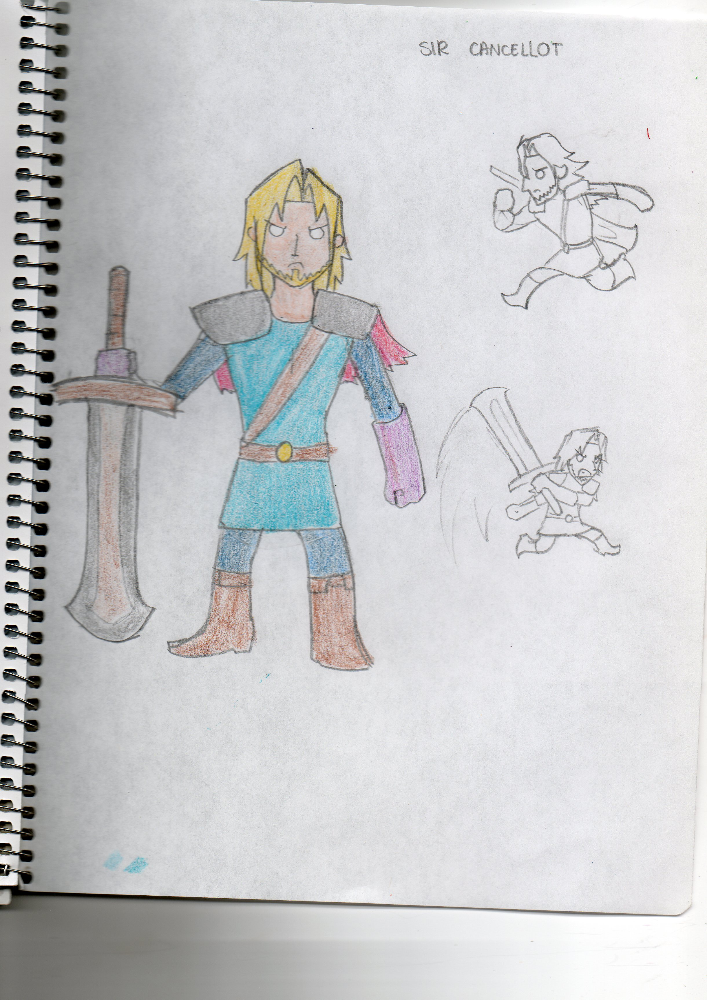
I decided the character to be male, because having a female lead would go
with the stereotype that girls are sensible and stuff, that's why Sir Cancellot,
the main character, is actually a very macho man.
You go through 5 silly levels and you have a love-and-hate bar, depending
on the position of the bar (love or hate) your attacks vary, also, some
enemies are weaker to one or the other. You get different endings depending on how you finish it.
Decidí que el personaje principal fuera hombre para no alimentar estereotipos
de que las mujeres somos sensibles o cosas así, por eso el protagonista, Sir Cancellot,
es muy macho.
En el juego irías por 5 niveles ridículos con una barra de amor y odio, ciertas cosas, como comer
te inclinan al amor, mientras que otras, como recibir un golpe, te inclinan al odio, dependiendo
de a donde se incline la barra son tus ataques y si los enemigos son débiles o resistentes. Tambien
habría diferentes finales dependiendo de en qué punto de la barra terminaras el juego.
The game would start with Sir Cancellot on a bar, when he wonders where his wife is, so he goes looking for her.
El juego empiezaría con Sir Cancellot en un bar, y se pregunta donde está su esposa, así que decide buscarla.
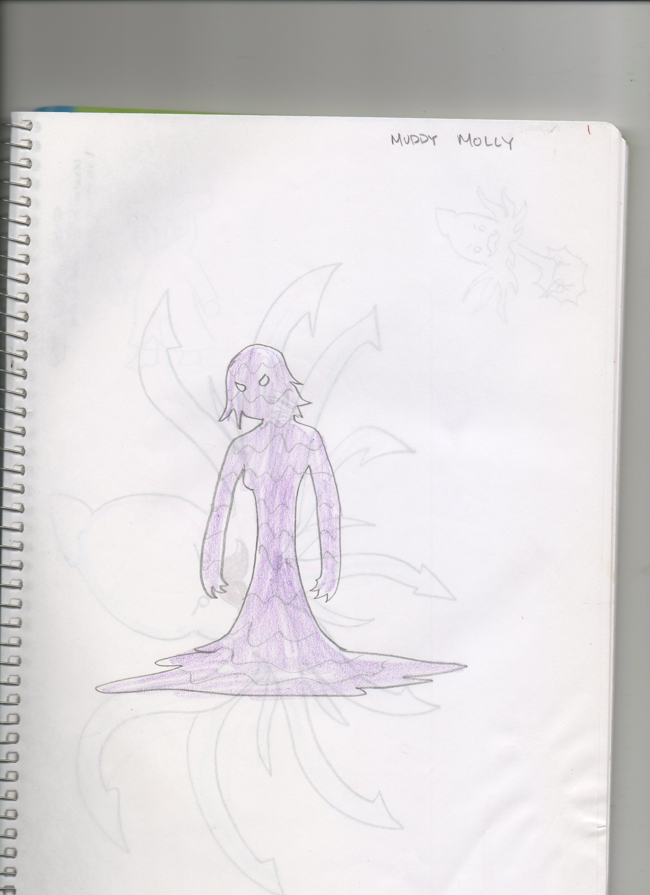The first boss would be a mud woman
El primer jefe sería una mujer de lodo
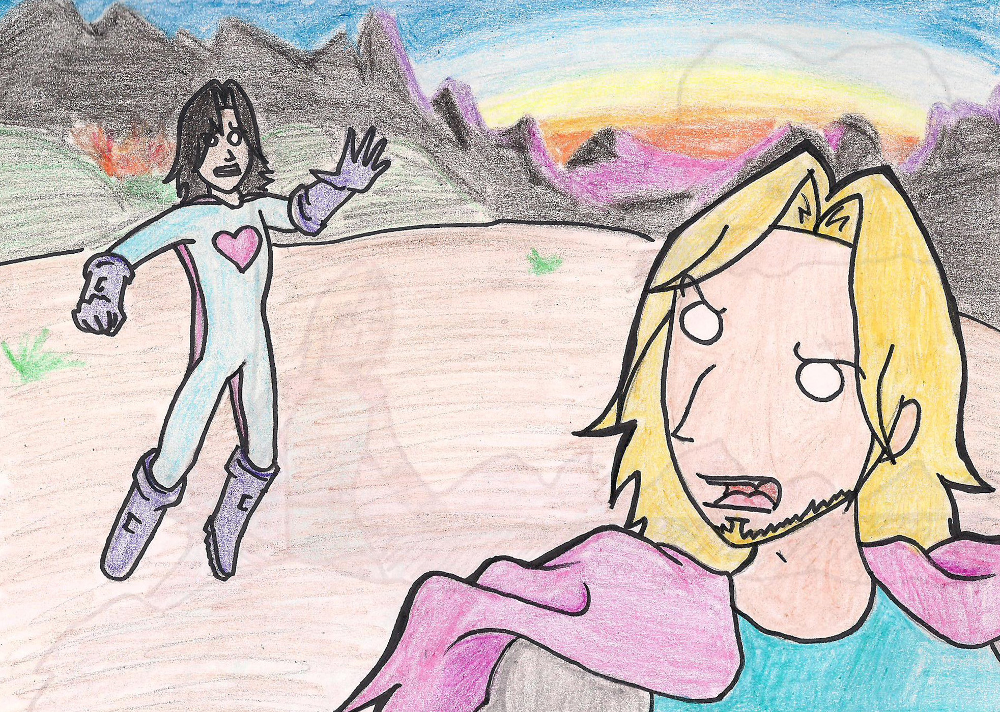There would be a character in love with Sir Cancellot who would follow him through the second level
En el segundo nivel habría un personaje enamorado de Sir Cancellot que lo perseguiría
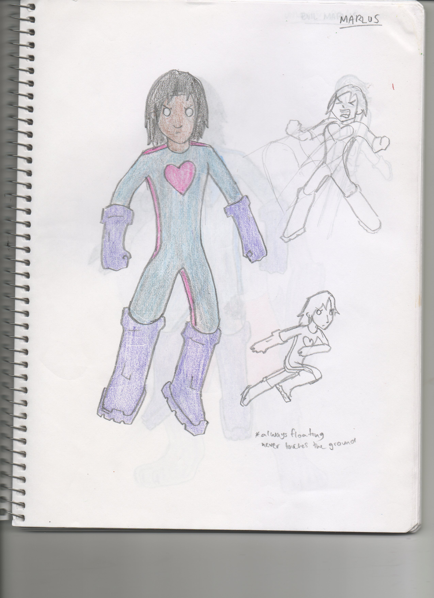That would be the second boss, he'd be weak to hate.
Ese sería el segundo jefe, débil al odio.
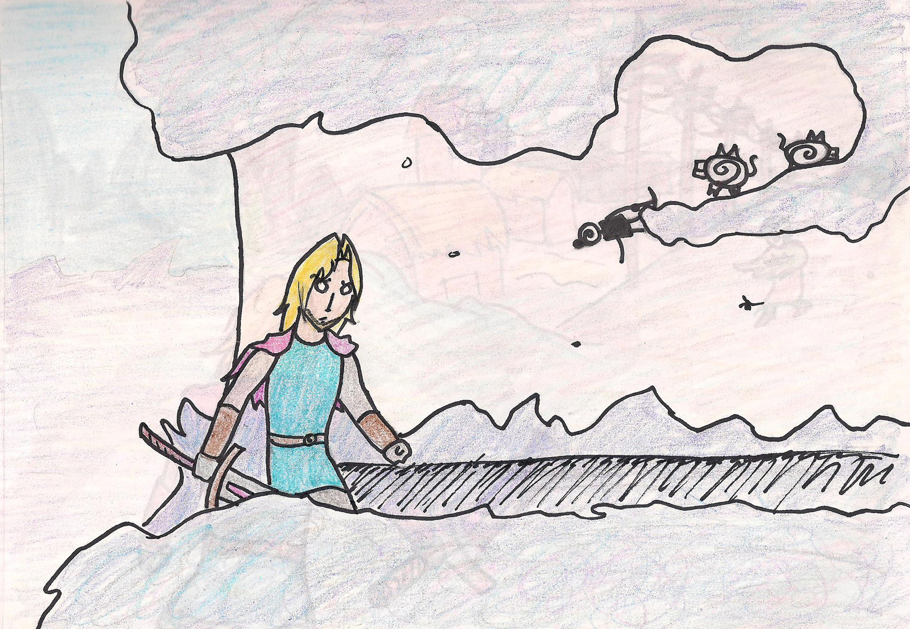On the third level you would reach a village of tiny people.
En el tercer nivel llegarías a una aldea de personitas.
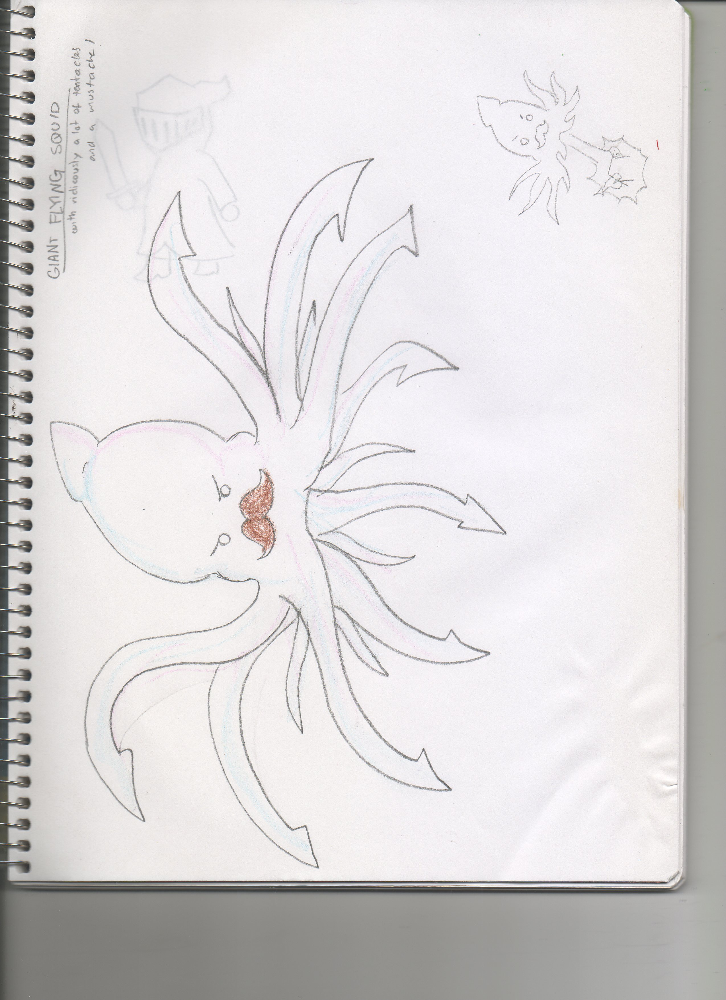The boss would have been a giant floating squid with a mustache.
El jefe habría sido un calamar gigante con un bigote
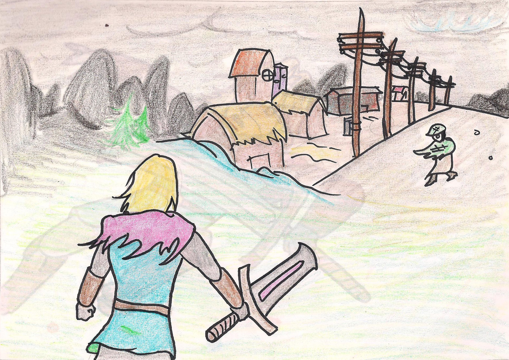Then you would reach a village where a mistery happens.
Después llegarías a una aldea donde hay un misterio.
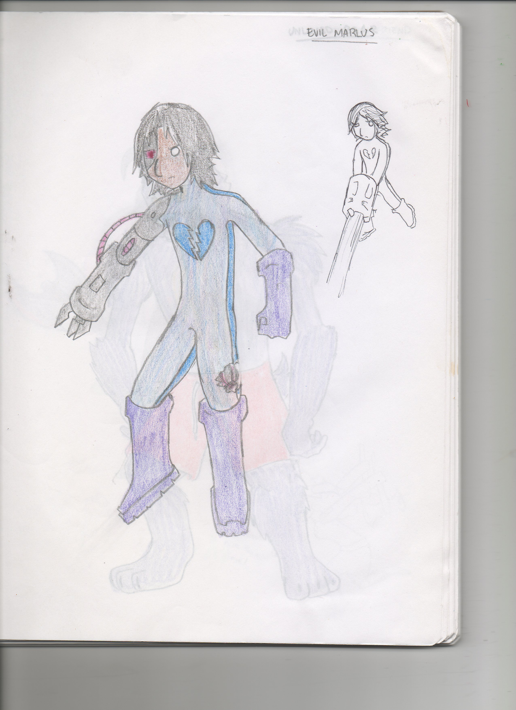The fourth boss would be the character from the second level with cyborg parts, now he'd be weak to love.
El cuarto jefe serís el personaje del segundo nivel pero con partes cyborg, ahora débil al amor.
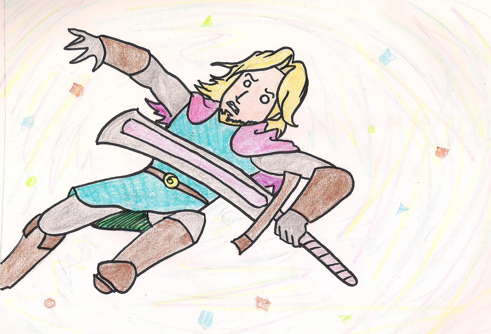- Love: Your wife was captured and you fight her captor. 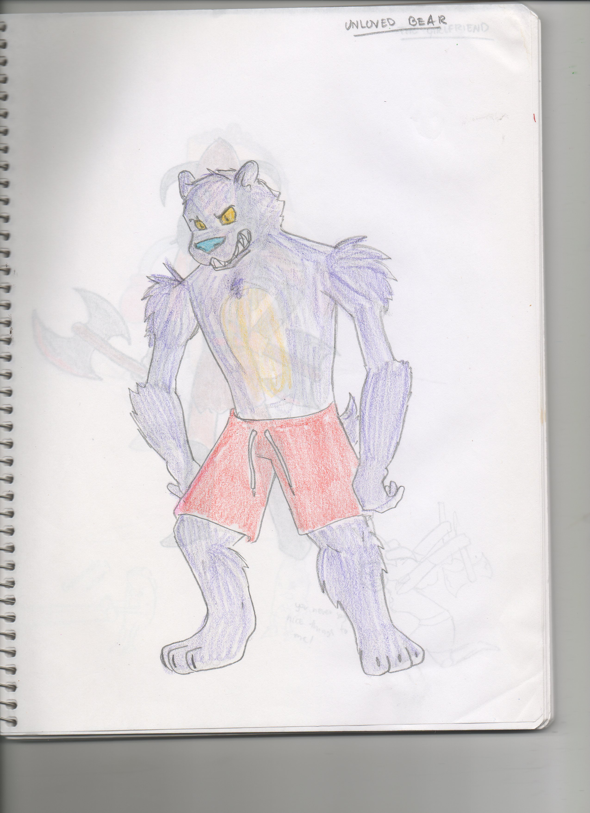
- Neutral: You're hungry, the boss is a giant taco. 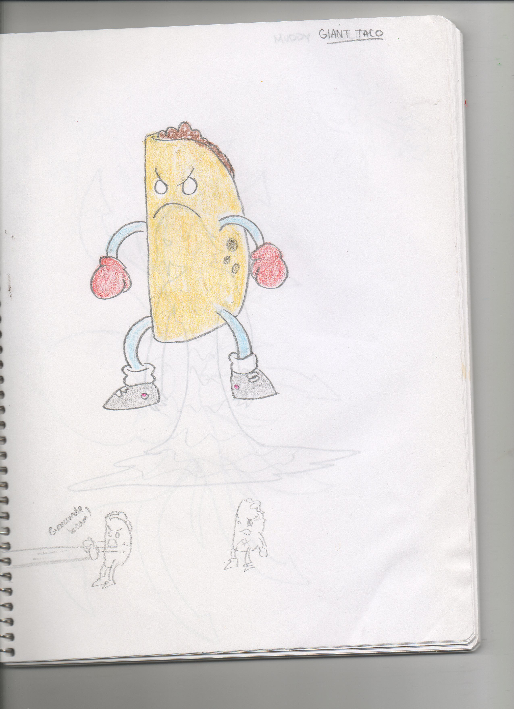
- Hate: You're wife was cheating no you, she's the boss. 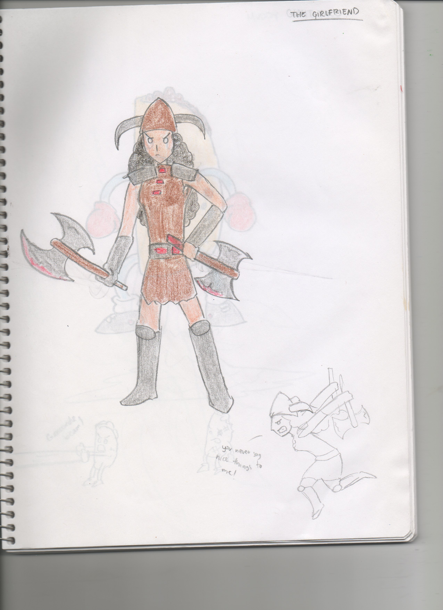
- Amor: Tu esposa estaba secuestrada y peleas con el monstruo que la secuestró.
- Neutral: Recordaste que tenía hambre, el boss es un taco gigante.
- Odio: Tu esposa te estaba engañando y va a terminar contigo, ella es el boss.